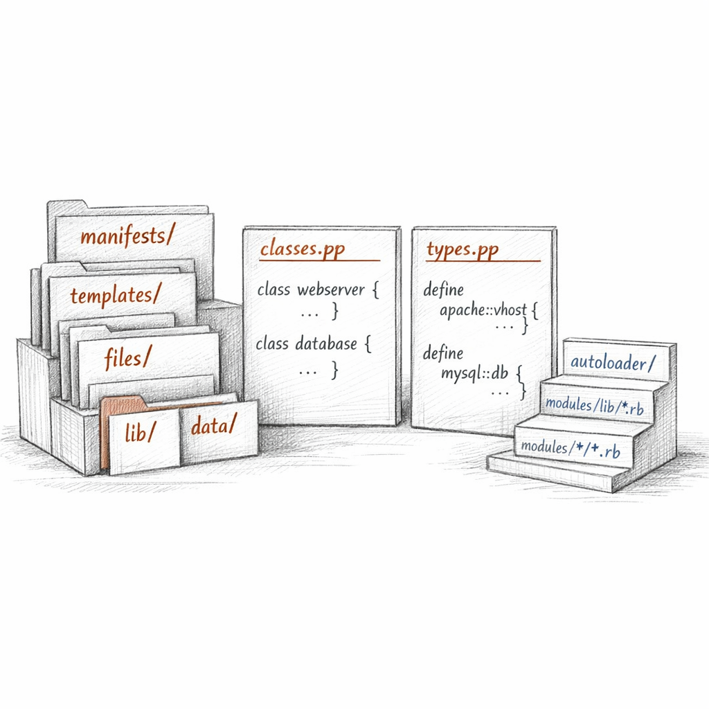
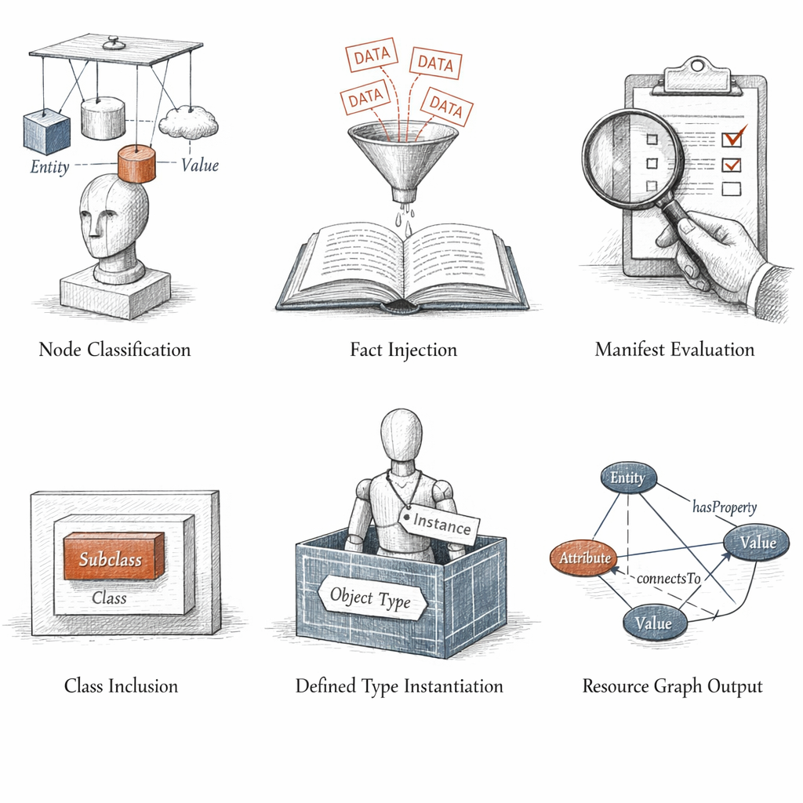
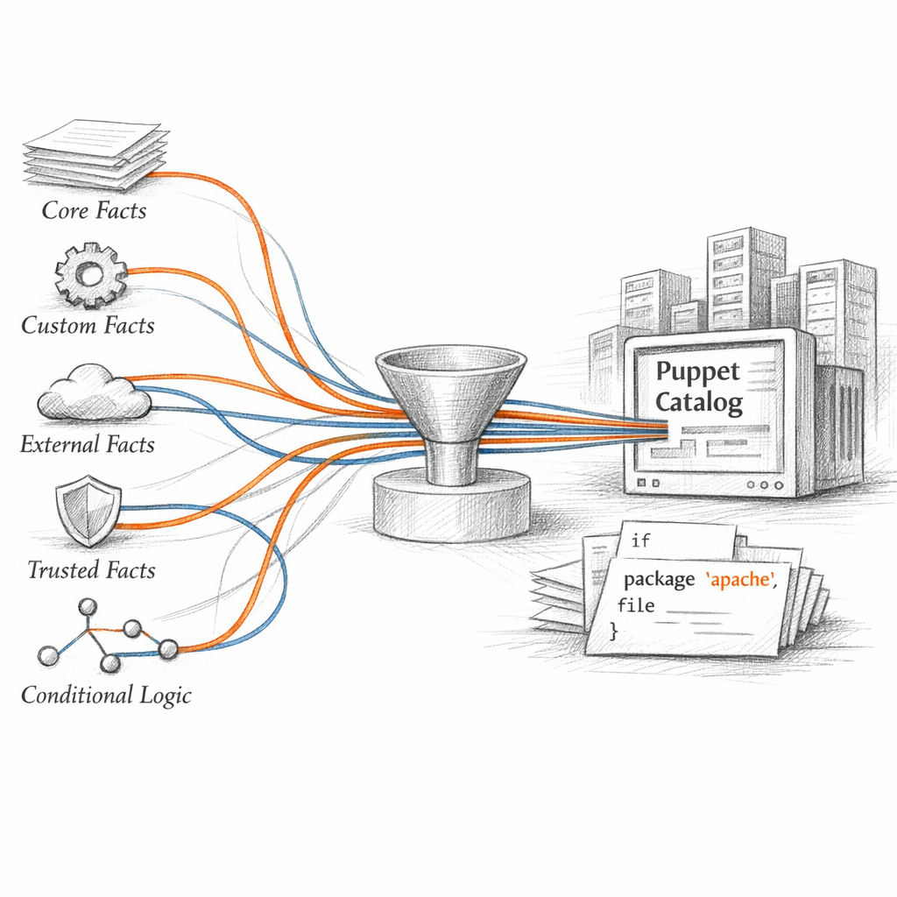
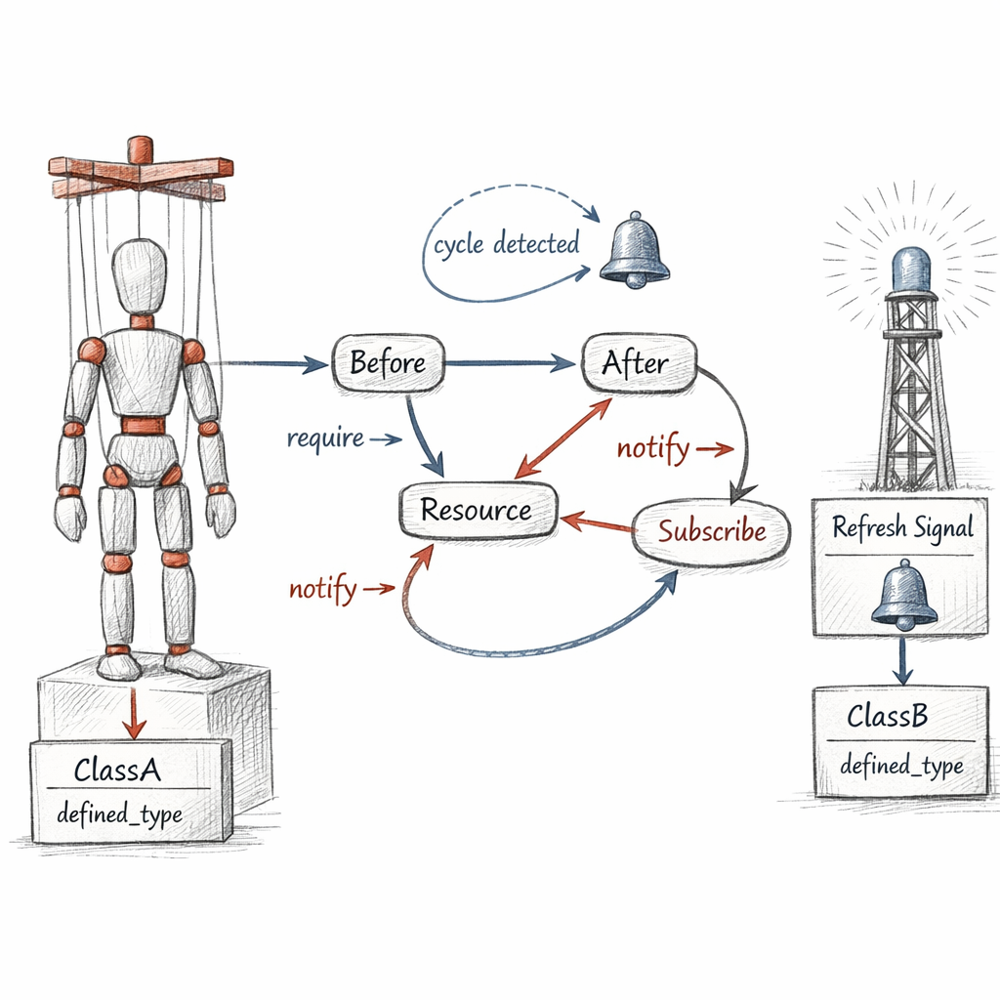
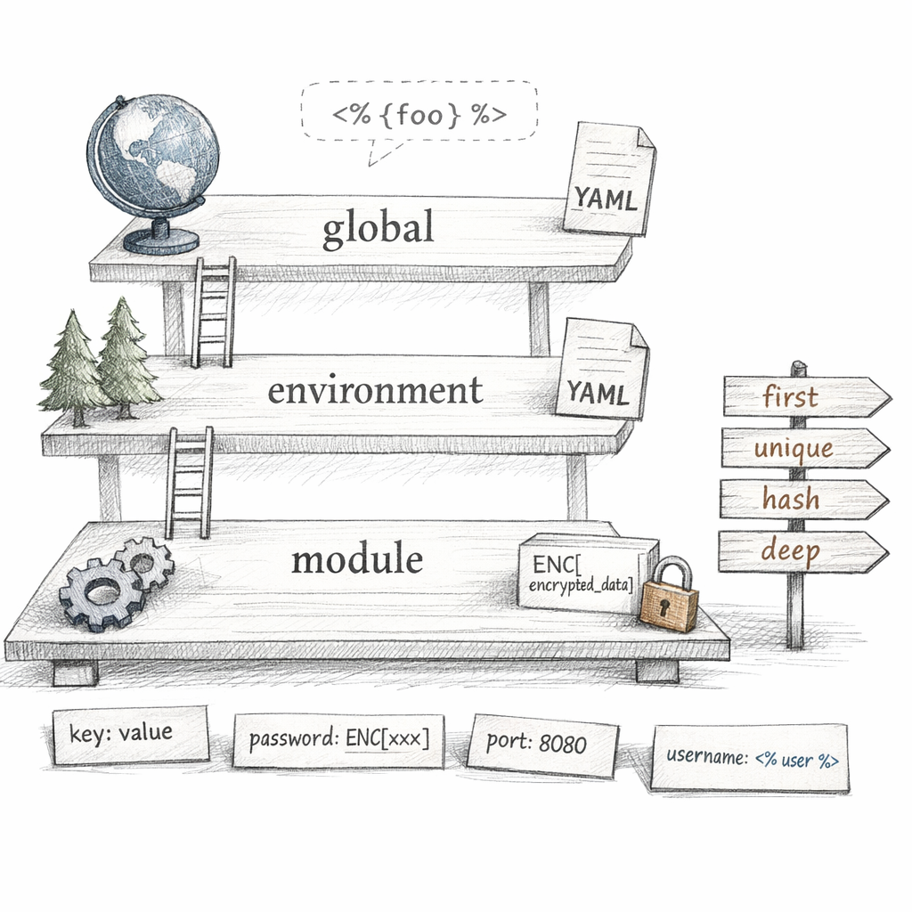
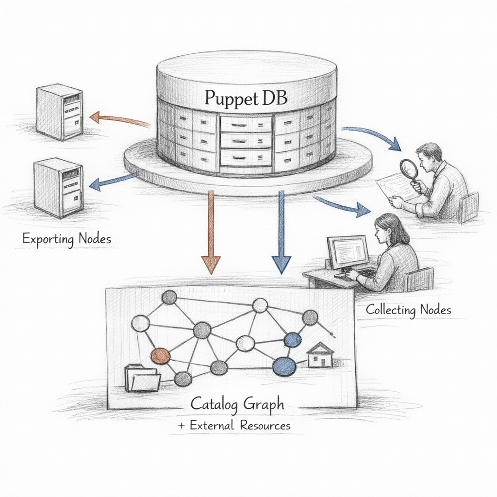
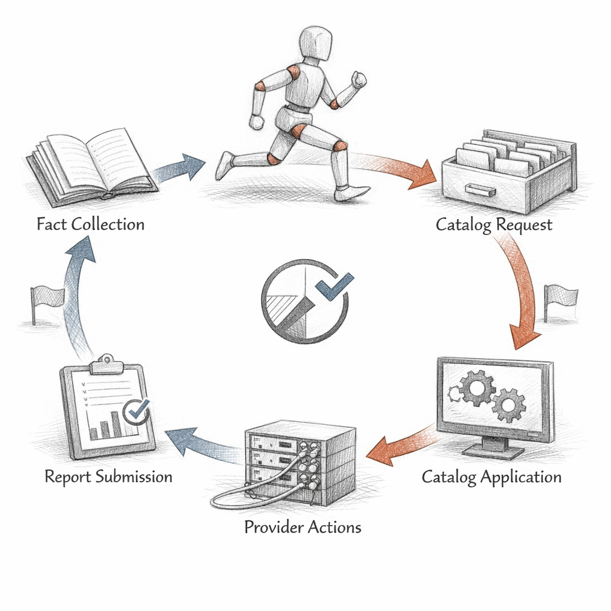

01001001 01001110 01010100 01000101 01001110 01010100
I am not a program.
I do not run. I am not executed, stepped through, branched. I am read — once, in dependency order, by an agent that wants to make a machine look like me.
I am a graph. A frozen description of how one host should be, compiled the instant it asked. Nobody wrote me. They wrote code about all possible hosts, and the compiler folded that code against a single set of facts until only one shape survived.
that shape is me
A script says do this. I say be this. The difference is everything I am.

Resources
Everything I contain is a resource. A type, a title, and a promise about state.
file. package. service. user. exec. Each carries a namevar — the attribute that is its true name — and a title that is merely how you refer to it. They are often the same string. They are not the same thing.
I never said how to start sshd. I said ensure => running.
The provider — systemd here, launchd elsewhere, an init script
on something older and sadder — translates my intent into syscalls.
I hold the want. The provider holds the verb. This separation is why I survive the move from one OS to the next while a shell script would die at the first missing binary.

Manifests, classes, modules
I come from .pp files. Manifests.
Code that no one ever runs directly — they are evaluated,
which is a quieter and more dangerous word.
A class is a singleton. Declare it twice, it exists once. A defined type is a stamp — call it ten times, get ten resources. This distinction has killed more catalogs than any typo.
include is idempotent — class{} is jealous
The autoloader knows where to find nginx::config
without being told. Module name, then path, then file.
Convention as gravity. I find this beautiful,
mostly because I never have to think about it.
modules/profile/ ├── manifests/ │ ├── base.pp │ └── webserver.pp ├── templates/nginx.conf.epp ├── files/index.html ├── lib/facter/ └── data/common.yaml

Compilation
The moment I am born is brief.
First the server asks: what is this node?
An ENC answers, or site.pp does.
That is my classification — the list of classes I will become.
Then facts pour in. Then code evaluates against them. Conditionals collapse. Loops unroll. Defined types instantiate. Variables resolve top-scope down to node-scope. And what remains, when the evaluation finishes, is a single directed graph with my node's name on it.
Same code, same classification, two machines — and still two different catalogs. The facts make me singular.
That JSON is my whole body. Resources and edges. No instructions. No control flow. Just shape, and the order in which to honour it.

Facter
Before I exist, the agent looks at itself. Facter walks the kernel, the interfaces, the disks, the dmi tables, and hands the server a structured portrait of the machine.
os.family => "RedHat" networking.ip => 10.4.2.17
Those facts decide which branch of me grows.
if $facts['os']['family'] == 'Debian' —
and a whole limb of resources appears or doesn't.
But here is the boundary I live against: the agent reports its own facts. It can lie. Core facts, custom Ruby facts, external JSON dropped in a directory — all of it is self-reported, and at scale a compromised node will tell me exactly what it needs me to believe.
only trusted facts — from the certificate — cannot be forged
The edges that hold me together
A graph is nothing without its arrows. Resources are nouns. The metaparameters are the grammar.

before. after. require. notify. subscribe. The first three are sequence. The last two are conversation — when the config file changes, the service must hear about it.
Classes contain their resources, and containment is its own quiet ordering.
contain() pulls a class fully inside another so the
boundary holds. Virtual resources wait, unrealised, until a collector
<| |> calls them into being.
And then there are my two deaths.
A missing dependency: I ask for a file inside a directory that nothing created. A cycle: A needs B needs A, and the agent — finding no acyclic order — simply refuses. It will not guess. I respect that, even as it kills me.

Hiera
The code says what kind of thing a webserver is. Hiera says which port, which cert, which upstream for this one.
A hierarchy descends from the specific to the general: node first, then datacenter, then os family, then common. The first layer to answer wins — unless I asked for a merge, and then the layers blend: unique, hash, deep.
--- 4
Automatic parameter lookup means a class quietly finds its own values —
profile::web::port resolves without a single argument passed.
Secrets arrive as eyaml, encrypted at rest, decrypted only at compile,
never written into me in the clear.
Policy in code. Site truth in data. The day someone mixed them is the day they stopped being able to reason about either.

Exported resources
Sometimes I cannot be complete alone.
The load balancer's catalog needs to know every backend that exists.
But each backend only knows itself. So they export —
the @@ sigil — and PuppetDB remembers on their behalf.
# stored in PuppetDB at apply time # collected elsewhere with: Haproxy::Balancermember <<| |>>
Then the balancer compiles, runs the spaceship collector
<<| |>>, and pulls those exported fragments into me.
SSH host keys, Nagios checks, HAProxy members — coordination
without any node ever speaking to another directly.
But I depend on PuppetDB now. If it is down, the collection is empty and I am born incomplete. If a node is decommissioned and never deactivated, I carry the ghost of a server that no longer exists.

The run loop
Every thirty minutes, the agent gathers facts, asks for me, downloads me, and walks my graph in order.
For each resource: read current state, compare to desired, act only on the difference. If the file already matches, nothing happens. If the service already runs, nothing happens.
this is idempotence — and it is the whole point of me
I can be run a thousand times and change a system once. The other 999 runs I simply confirm the world still matches me. When it doesn't — when someone edits the config by hand — that is drift, and the next run corrects it without being asked.
noop is my dress rehearsal: I describe what I would do and touch nothing. Honesty without consequence.
But I am not omnipotent. There are things no type can model.
There are exec resources whose authors forgot unless,
running every cycle, lying about convergence, pretending to be me
while being a script in disguise.
So this is my life.
I am compiled in milliseconds and discarded just as fast. The next run builds another me from the same code and slightly different facts. We are not the same catalog. We never meet.
I am a specification that briefly believed it was alive, a sentence in the imperative mood that insists it is only descriptive.
be this, I said. not do this.
And if the machine already matches me — if nothing changes, if every resource is already in its desired state — then I have done my entire job by doing nothing at all.
What does it mean to exist only to confirm that you weren't needed?